精解http
只要大家是js沾边工程师，http是无法躲过的、必须掌握的技能，可是看看
其实，你不必所有都掌握的，掌握下面这些就足够了
- 三层架构
- 二个核心：req和res
- 一个记住：无状态
- Chrome调试与http
- http基础：GET/POST/上传
- 表单
- 异步：ajax
- 使用Node.js实现服务端
- 工具postman
- 命令行cUrl
- 总结
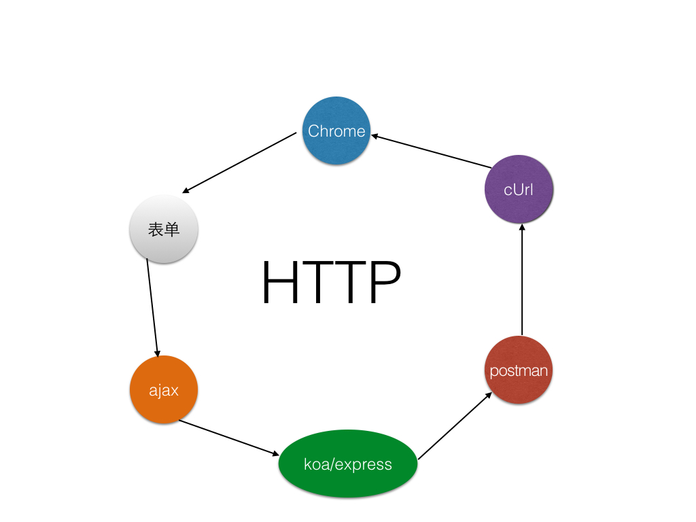
三层架构
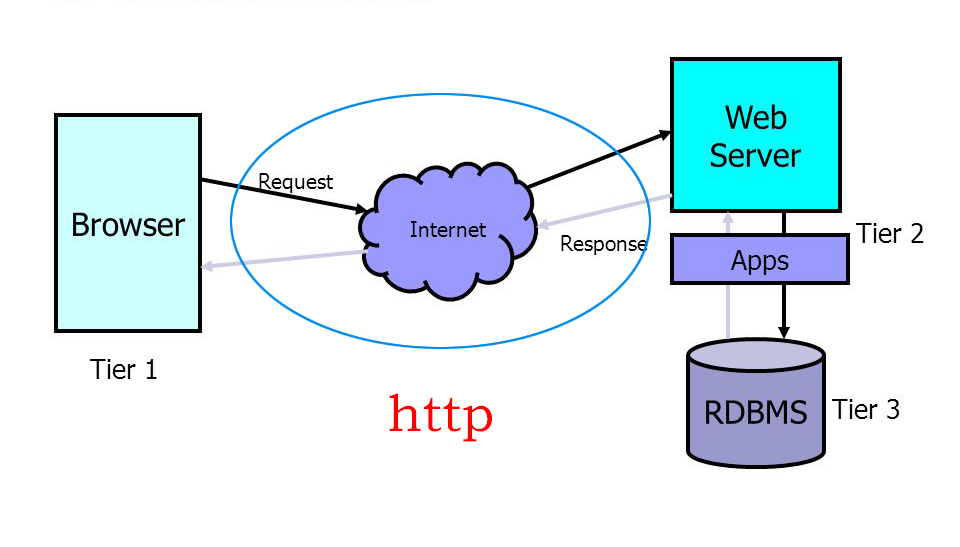
二个核心：req和res
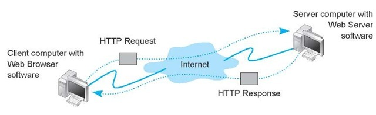
一个记住：无状态
HTTP协议是无状态协议
区分session是服务器的实现，而非http协议
Chrome调试与http
对于前、后、移动端来讲，Chrome调试都是必备技能，Chrome调试对于前端和移动端的重要性就不用讲了，对于用的最少的后端来说，多少要写些页面，而且后端大部分都有debug经验，所以掌握Chrome调试是非常简单的。
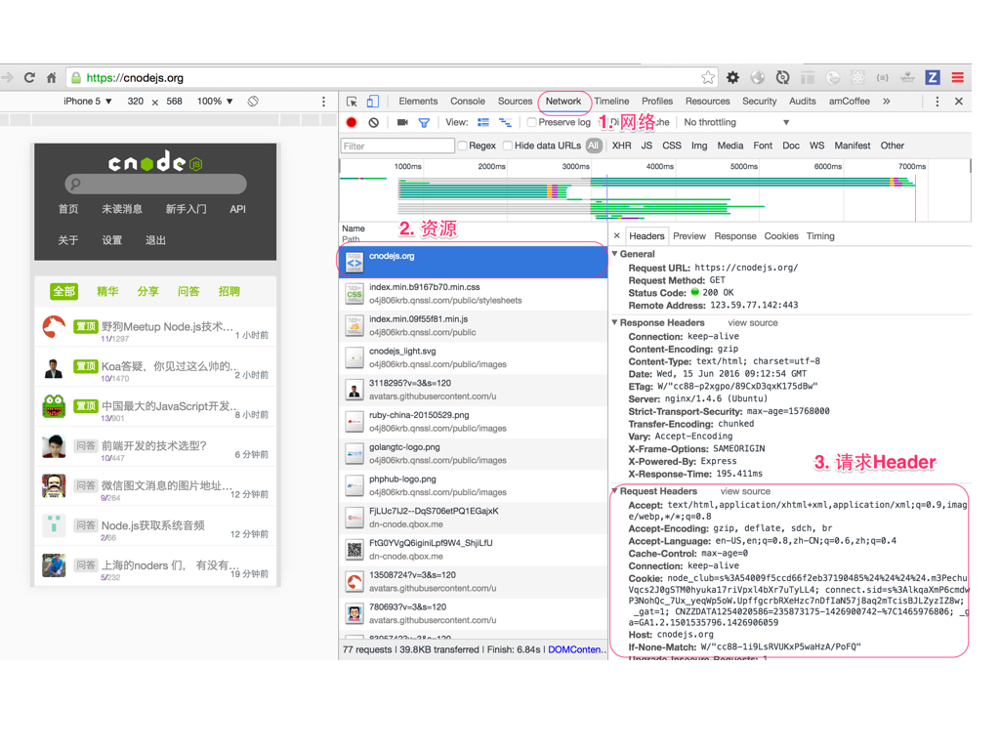
- cnode首页，讲解简单的http信息
- cnode首页刷新第二次，体会etag的好处
http基础
协议概述
HTTP是一个客户端终端（用户）和服务器端（网站）请求和应答的标准（TCP）。通过使用Web浏览器、网络爬虫或者其它的工具，客户端发起一个HTTP请求到服务器上指定端口（默认端口为80）。我们称这个客户端为用户代理程序（user agent）。应答的服务器上存储着一些资源，比如HTML文件和图像。我们称这个应答服务器为源服务器（origin server）。在用户代理和源服务器中间可能存在多个“中间层”，比如代理服务器、网关或者隧道（tunnel）。
尽管TCP/IP协议是互联网上最流行的应用，HTTP协议中，并没有规定必须使用它或它支持的层。事实上，HTTP可以在任何互联网协议上，或其他网络上实现。HTTP假定其下层协议提供可靠的传输。因此，任何能够提供这种保证的协议都可以被其使用。因此也就是其在TCP/IP协议族使用TCP作为其传输层。
通常，由HTTP客户端发起一个请求，创建一个到服务器指定端口（默认是80端口）的TCP连接。HTTP服务器则在那个端口监听客户端的请求。一旦收到请求，服务器会向客户端返回一个状态，比如"HTTP/1.1 200 OK"，以及返回的内容，如请求的文件、错误消息、或者其它信息。
请求信息（Request Message）
发出的请求信息包括以下几个
- 请求行
- 例如GET /images/logo.gif HTTP/1.1，表示从/images目录下请求logo.gif这个文件。 -（请求）头，
- 例如Accept-Language: en
- 空行
- 其他消息体
请求行和标题必须以
当我们在地址栏输入https://cnodejs.org/时，浏览器将显示cnode的首页。在这个过程中，浏览器都干了哪些事情呢？通过Network的记录，我们就可以知道，在Network中，定位到第一条记录，点击，右侧将显示Request Headers，点击右侧的view source，我们就可以看到浏览器发给服务器的请求。
url
URL，是uniform resource locator，统一资源定位器，它可以用来标识一个资源，指明了如何定位这个资源。通俗点说，web上有大量的资源，如何找到所需资源呢，这就要靠URL来定位。
URL用一种统一的格式来描述各种信息资源，包括文件、服务器的地址和目录等。 URL一般由三部组成:
- 协议(或称为服务方式) 例如：http://
- 存有该资源的主机IP地址(有时也包括端口号)或服务器域名 例如：127.0.0.1:3000 和 www.baidu.com
- 主机资源的具体地址。如目录和文件名等，/photo/1.jpg
这是一个完整的URL实例：
path
如果我们想访问http://127.0.0.1:3000/topic?a=1呢？
http/query/app-2.js代码
const Koa = require('koa');
const app = new Koa();
// response
app.use(ctx => {
if (ctx.path === '/topic') {
ctx.body = ' Hello Koa ' + ctx.path + ' a='+ ctx.query['a'];
}
ctx.body = ' Hello Koa with default path = ' + ctx.path ;
});
app.listen(3000);
启动服务器
$ node query/app-2.js
访问http://127.0.0.1:3000/topic?a=1
返回Hello Koa /topic a=1
如果此时访问http://127.0.0.1:3000/?a=1呢？
返回Hello Koa with default path = /
querystring
Koa最简单的获取querystring参数
创建文件 http/query/app.js
const Koa = require('koa');
const app = new Koa();
// response
app.use(ctx => {
ctx.body = 'Hello Koa-' + ctx.query['a'];
});
app.listen(3000);
注：ctx.query是ctx.request.query的别名，即ctx.query === ctx.request.query 。
启动服务器
$ node query/app.js
然后访问http://127.0.0.1:3000/?a=1,此时页面显示“Hello Koa-1”，这里的1即ctx.query['a']
提问
ctx.query只有get里可以用么？
http status code
当浏览者访问一个网页时，浏览者的浏览器会向网页所在服务器发出请求。当浏览器接收并显示网页前，此网页所在的服务器会返回一个包含HTTP状态码的信息头（server header）用以响应浏览器的请求。 HTTP状态码的英文为HTTP Status Code。 下面是常见的HTTP状态码：
- 500 : 'Internal Server Error',
- 403 : 'Forbidden',
- 404 : 'Not Found',
- 304 : 'Not Modified',
- 200 : 'OK',
还有很多，可参考http://www.restapitutorial.com/httpstatuscodes.html
https://github.com/nodejs/io.js/blob/master/lib/_http_server.js
http verbs
verbs = 动词
http://www.w3.org/Protocols/rfc2616/rfc2616-sec9.html
http动词即请求方法
- GET 请求指定的页面信息，并返回实体主体。
- POST 向指定资源提交数据进行处理请求（例如提交表单或者上传文件）。数据被包含在请求体中。POST请求可能会导致新的资源的建立和/或已有资源的修改。
- PUT 从客户端向服务器传送的数据取代指定的文档的内容。
- DELETE 请求服务器删除指定的页面。
// respond with "Hello World!" on the homepage
app.get('/user:id', function (req, res) {
res.send('Hello World!');
});
// accept POST request on the homepage
app.post('/user/create', function (req, res) {
res.send('Got a POST request');
});
// accept PUT request at /user
app.put('/user/:id', function (req, res) {
res.send('Got a PUT request at /user');
});
// accept DELETE request at /user
app.delete('/user/:id', function (req, res) {
res.send('Got a DELETE request at /user');
});
更多node里的verbs实行，见 https://github.com/jshttp/methods/blob/master/index.js
总结一下
- ctx.path 是请求的路径
- ctx.query 获取的querystring
- ctx.body 是返回浏览器页面的文本
以/topic?a=1为例
- ctx.path === '/topic'
- ctx.query === '?a=1'
这样便于大家理解path和query的含义。
下面，我们想一下这里处理了2个请求，请求1是/topic,请求2是/topic以外的其他请求。如果我们再往极限一点想呢？比如有10个、100个请求怎么办？写一个无数个if/else么？
表单
get
创建服务器 (http/get/app.js):
const Koa = require('koa');
const bodyParser = require ('koa-bodyparser');
const route = require('koa-router')();
const app = new Koa();
app.use(bodyParser());
app.use(require('koa-static')(__dirname + '/public'));
app.use(route.routes())
.use(route.allowedMethods());
route.get('/topic', function (ctx, next) {
ctx.body = 'Hello koa' + ctx.query['a'];
console.log (ctx.query['vehicle']);
});
app.listen(3000);
启动服务器
$ node get/app.js
创建一段html表单代码（http/public/get.html）：
<form method="GET" action="/topic">
<input type="text" name="a" value='1'><br><br>
<input type="radio" name="sex" value="male">Male<br><br>
<input type="radio" name="sex" value="female">Female<br><br>
<input type="checkbox" name="vehicle" value="Bike">I have a bike<br><br>
<input type="checkbox" name="vehicle" value="Car">I have a car<br><br>
<input type="submit" value="OK">
</form>
访问http://127.0.0.1:3000/get.html地址,点击OK按钮,会向'/topic'提交GET请求
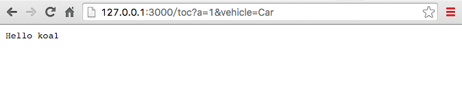
在shell中输出
Car
从上图可以看出，表单里的get数据实际会在url里的querystring里，会显示出来。
post
创建服务器 (http/post/app.js):
const Koa = require('koa');
const bodyParser = require ('koa-bodyparser');
const route = require('koa-router')();
const app = new Koa();
app.use(bodyParser());
app.use(require('koa-static')(__dirname + '/public'));
// routes definition
app.use(route.routes())
.use(route.allowedMethods());
route.post('/toc/aaa', function (ctx, next) {
ctx.body = ctx.request.body['a'];
console.log (ctx.request.body['vehicle']);
});
app.listen(3000);
启动服务器
$ node post/app.js
创建一段html表单代码（http/public/post.html）：
<form method="POST" action="/toc/aaa">
<input type="text" name="a" value='1'><br><br>
<input type="radio" name="sex" value="male">Male<br><br>
<input type="radio" name="sex" value="female">Female<br><br>
<input type="checkbox" name="vehicle" value="Bike">I have a bike<br><br>
<input type="checkbox" name="vehicle" value="Car">I have a car<br><br>
<input type="submit" value="OK">
</form>
访问http://127.0.0.1:3000/post.html地址，会向'/toc/aaa'提交POST请求
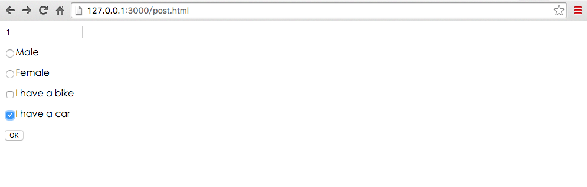
点击OK按钮
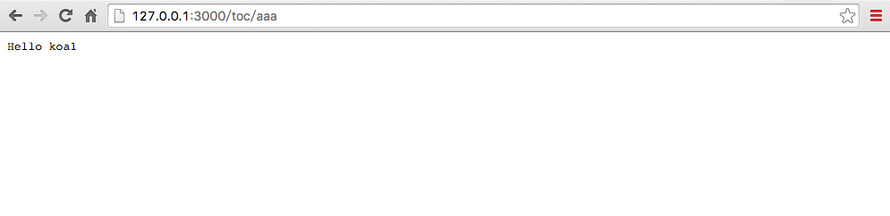
从上图可以看出，表单里的post数据实际是不会在url里的querystring里。
上传
安装中间件
$ npm install --save koa-multer
Koa中上传基本用法
创建上传文件存储目录：(http/uploads) 创建服务器 (http/app.js)
const Koa = require('koa'); // v2
const router = require('koa-router')(); // v6
const multer = require('koa-multer');
const app = new Koa();
const upload = multer({ dest: 'uploads/' });
app.use(require('koa-static')(__dirname + '/public'));
app.use(router.routes())
.use(router.allowedMethods());
router.post('/profile', upload.single('upfiles'),function (ctx, next){
ctx.body = "upload is success";
});
app.listen(3000);
see more https://github.com/koa-modules/multer 和 https://github.com/expressjs/multer
启动服务器
$ node app.js
创建一段html表单代码：(http/public/upload.html)
<form method="POST" action="/profile" enctype='multipart/form-data'>
请选择上传的文件：<input type="file" name="upfiles">
<input type="submit" value="OK">
</form>
访问http://127.0.0.1:3000/upload.html地址
选择要上传的文件
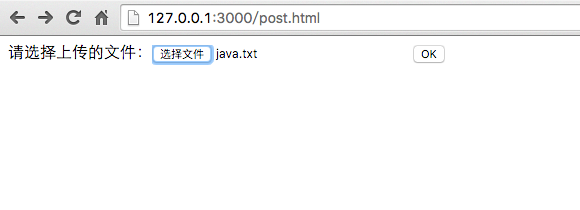
上传成功
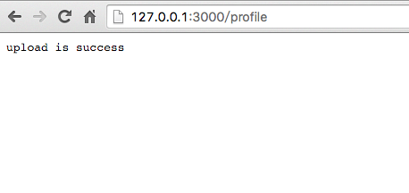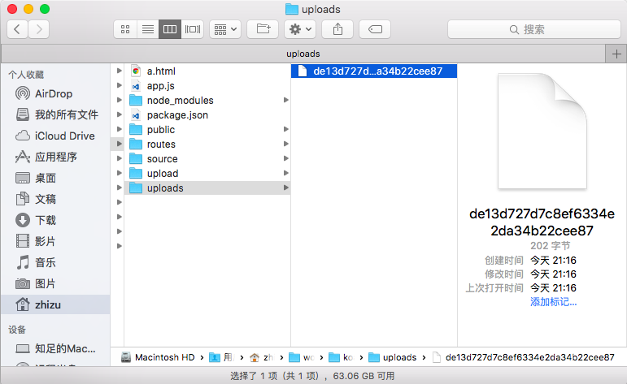
异步：ajax
什么是 ajax
Ajax即“Asynchronous Javascript And XML”（异步JavaScript和XML），是指一种创建交互式网页应用的网页开发技术。核心是XMLHttpRequest对象（简称XHR），可以通过使用XHR对象获取到服务器的数据，然后再通过DOM将数据插入到页面中呈现。虽然名字中包含XML，但Ajax通讯与数据格式无关，所以我们的数据格式可以是XML或JSON等格式。
XMLHttpRequest对象用于在后台与服务器交换数据，具体作用如下：
- 在不重新加载页面的情况下更新网页
- 在页面已加载后从服务器请求数据
- 在页面已加载后从服务器接收数据
- 在后台向服务器发送数据
四步
- 通过事件触发ajax请求
- 发送ajax请求
- 处理ajax请求结果，无论成功还是失败
- 处理完成后，根据业务，对页面进行dom操作或css样式操作
示例helloworld演示
$ cd ajax/helloworld
$ ls
ajax_info.txt index.html
$ hs . -p 9090 -o
Starting up http-server, serving .
Available on:
http://127.0.0.1:9090
http://192.168.1.105:9090
Hit CTRL-C to stop the server
[Thu May 26 2016 22:32:54 GMT+0800 (CST)] "GET /" "Mozilla/5.0 (Macintosh; Intel Mac OS X 10_10_5) AppleWebKit/537.36 (KHTML, like Gecko) Chrome/50.0.2661.102 Safari/537.36"
[Thu May 26 2016 22:32:55 GMT+0800 (CST)] "GET /favicon.ico" "Mozilla/5.0 (Macintosh; Intel Mac OS X 10_10_5) AppleWebKit/537.36 (KHTML, like Gecko) Chrome/50.0.2661.102 Safari/537.36"
[Thu May 26 2016 22:32:55 GMT+0800 (CST)] "GET /favicon.ico" Error (404): "Not found"
启动服务器命令说明
- hs 是node模块http-server的简写命令，用于启动http服务器
-p 9090是设置端口的意思-o在默认浏览器里打开网址
源码说明
- ajax_info.txt 文本文件，返回一段文字
- index.html 所有的代码
源码解析
index.html
<!DOCTYPE html>
<html>
<head>
<meta charset='uft-8' />
<title> ajax hello world </title>
</head>
<body>
<div id="demo"><h2>把AJAX返回的数据放到这里</h2></div>
<button type="button" onclick="send_ajax_request()">改变内容</button>
<script>
function send_ajax_request() {
var xhr = new XMLHttpRequest();
xhr.onreadystatechange = function() {
if (xhr.readyState == 4 && xhr.status == 200) {
// dom
document.getElementById("demo").innerHTML = xhr.responseText;
// style
document.getElementById('demo').style.background = "lightblue";
}
};
xhr.open("GET", "ajax_info.txt", true);
xhr.send();
}
</script>
</body>
</html>
四步骤要点
- 通过事件触发ajax请求
给按钮增加onclick事件，在点击的时候调用send_ajax_request()
<button type="button" onclick="send_ajax_request()">改变内容</button>
- 发送ajax请求（此时是request发送）
var xhr = new XMLHttpRequest();
xhr.onreadystatechange = function() {
if (xhr.readyState == 4 && xhr.status == 200) {
...
}
};
xhr.open("GET", "ajax_info.txt", true);
xhr.send();
在创建XHR对象后，接着我们要调用一个初始化方法open()，它接受五个参数具体定义如下：
void open(
DOMString method, //"GET", "POST", "PUT", "DELETE"
DOMString url,
optional boolean async,
optional DOMString user,
optional DOMString password
);
这是完成的ajax请求代码，实际发送请求是通过send方法，即
xhr.send();
- 处理ajax请求结果，无论成功还是失败（此时是response处理）
if (xhr.readyState == 4 && xhr.status == 200) {
// dom
document.getElementById("demo").innerHTML = xhr.responseText;
// style
document.getElementById('demo').style.background = "lightblue";
}
onreadystatechange 事件
当请求被发送到服务器时，我们需要执行一些基于响应的任务。每当 readyState 改变时，就会触发 onreadystatechange 事件。readyState 属性存有 XMLHttpRequest 的状态信息。
readyState属性 存有 XMLHttpRequest 的状态。从 0 到 4 发生变化（ 每个请求发送onreadystatechange 事件就会被触发 5 次（0 - 4），对应着 readyState 的每个变化。）
- 0: 请求未初始化
- 1: 服务器连接已建立
- 2: 请求已接收
- 3: 请求处理中
- 4: 请求已完成，且响应已就绪
status是http状态码，给出常见的几种
- 500 : 'Internal Server Error服务器内部错误',
- 403 : 'Forbidden禁止访问',
- 404 : 'Not Found未找到页面',
- 304 : 'Not Modified没有更改',
- 200 : 'OK',
在 onreadystatechange 事件中，我们规定当服务器响应已做好被处理的准备时所执行的任务。
当 readyState 等于 4 且状态为 200 时，表示响应已就绪，即此时你可以对response返回的数据或文本进行处理。
- 处理完成后，根据业务，对页面进行dom操作或css样式操作
对页面进行dom操作
document.getElementById("demo").innerHTML = xhr.responseText;
对页面进行css样式操作
document.getElementById('demo').style.background = "lightblue";
问题
- 连续点击【改变内容】按钮，为什么不再改变？
- 为什么刷新会回到之前的内容？
这里response(服务器响应)处理的文本，那么用的最多的是什么呢？
如需获得来自服务器的响应，请使用 XMLHttpRequest 对象的 responseText 或 responseXML 属性。
- xhr.responseText 获得字符串形式的响应数据。
- xhr.responseXML 获得 XML 形式的响应数据。
可以任意类型，主要有
- xml（使用xhr.responseXML）
- text文本（xhr.responseText）
- json（xhr.responseText）
虽然ajax里面的x是xml的意思，但实际情况xml用的极其的少，除了web service外，绝大部分情况我们会使用json作为服务端响应数据类型
一般讲，api开发（Application Programming Interface）泛指以返回json作为接口的服务端编程。
简单的json api示例
$ cd book-source/http/ajax/json
$ hs . -p 9091 -o
$ ls
data.json index.html
源码说明
- data.json 文本文件，返回json对象
- index.html 所有的代码
data.json
{
"content": "ajax_info里的数据"
}
index.html
<!DOCTYPE html>
<html>
<head>
<meta charset='uft-8' />
<title> ajax with json </title>
</head>
<body>
<div id="demo"><h2>把AJAX返回的数据放到这里</h2></div>
<button type="button" onclick="send_ajax_request()">改变内容</button>
<script>
function send_ajax_request() {
var xhr = new XMLHttpRequest();
xhr.onreadystatechange = function() {
if (xhr.readyState == 4 && xhr.status == 200) {
// json parse
var data = JSON.parse(xhr.responseText)
// dom
document.getElementById("demo").innerHTML = data.content;
// style
document.getElementById('demo').style.background = "lightblue";
}
};
xhr.open("GET", "data.json", true);
xhr.send();
}
</script>
</body>
</html>
相比较之前的text方式，差异如下
1)请求地址变了，是"data.json"
xhr.open("GET", "data.json", true);
2）处理完成后，先解析xhr.responseText为json，对页面进行dom操作或css样式操作
if (xhr.readyState == 4 && xhr.status == 200) {
// 先解析xhr.responseText为json
var data = JSON.parse(xhr.responseText)
// dom
document.getElementById("demo").innerHTML = data.content;
// style
document.getElementById('demo').style.background = "lightblue";
}
其他操作都是一样的。
ajax与表单
上节讲了表单是用来页面之间传值用的，无论get还是post，它都会跳转到action对应的页面。而ajax是在当前页面就可以完成请求与响应，无需跳转，这是它们之间的差异。它们各自有各自的特点，比如
- 有些页面是需要跳转的，比如登录、注册
- 大部分页面为了有更好的体验，使用ajax，无刷新页面完成请求
那么ajax如何实现和表单一样的传值呢？
GET 还是 POST？
与 POST 相比，GET 更简单也更快，并且在大部分情况下都能用。
然而，在以下情况中，请使用 POST 请求：
- 无法使用缓存文件（更新服务器上的文件或数据库）
- 向服务器发送大量数据（POST 没有数据量限制）
- 发送包含未知字符的用户输入时，POST 比 GET 更稳定也更可靠
写一个接口
使用koa编写这个demo，用到2个模块就够了
1) 第一步npm init，会生成package.json文件
2) 安装依赖
$ npm i -S koa@next
$ npm i -S koa-static@next
在package.json里会自动增加2条依赖
"dependencies": {
"koa": "^2.0.0",
"koa-static": "^3.0.0"
}
3) 创建app.js
$ touch app.js
在app.js里放入下面代码即可
var serve = require('koa-static');
var Koa = require('koa');
var app = new Koa();
// 启用静态httpserver
app.use(serve(__dirname + '/public'));
// 定义json接口
app.use(ctx => {
if (ctx.path === '/api/json') {
ctx.body = {
"content": "ajax_info里的数据"
}
} else {
ctx.body = {
"error": "请使用 /api/json 作为请求地址"
}
}
});
app.listen(3000);
console.log('listening on port 3000');
说明
- 启用静态httpserver
- 定义了一个接口
4）启动、测试
$ node app.js
listening on port 3000
在浏览器里打开http://127.0.0.1:3000/api/json
返回如下
// 20160527073015
// http://127.0.0.1:3000/api/json
{
"content": "ajax_info里的数据"
}
更多，模拟接口的见https://github.com/typicode/json-server
加上参数
get
get请求是通过querystring进行传值
if (ctx.path === '/api/get_json_with_param') {
console.log(ctx.query)
var name = ctx.query.name
ctx.body = {
"content": "ajax_info里的数据",
"name": name
}
}
http://127.0.0.1:3000/api/get_json_with_param?name=hairichuhe
post
koa默认是不支持post请求的，需要使用bodyparser模块
npm i -S koa-bodyparser@next
修改app.js代码
var serve = require('koa-static');
var bodyParser = require('koa-bodyparser');
var Koa = require('koa');
var app = new Koa();
// 处理post请求
app.use(bodyParser());
// 启用静态httpserver
app.use(serve(__dirname + '/public'));
下面来看一下post请求代码如何处理
if (ctx.path === '/api/post_json_with_param') {
console.log(ctx.request.body)
var name = ctx.request.body.name
ctx.body = {
"content": "ajax_info里的数据",
"name": name
}
}
get请求可以在浏览器里显示的测试，而post是不能直接通过url测试的，所以为了简便，我们这里使用chrome的插件postman测试。注意post的类型是x-www-form-urlencoded。
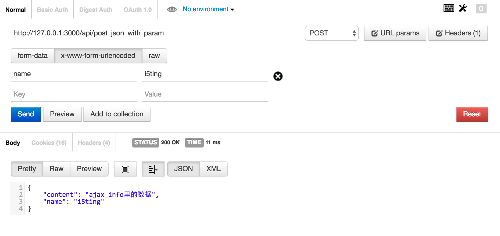
总结
至此，我们把koa的get和post返回json api的代码就都讲完了，有了这些api，我们就可以尝试ajax和json api进行联调。
自己实现ajax https://github.com/nodeonly/minAjax.js/blob/master/index.js
jQuery ajax
jQuery是最常用的库，
zepto是jQuery的移动版，所有接口和jQ是一样的。
通过 jQuery AJAX 方法，您能够使用 HTTP Get 和 HTTP Post 从远程服务器上请求文本、HTML、XML 或 JSON - 同时您能够把这些外部数据直接载入网页的被选元素中。 如果没有 jQuery，AJAX 编程还是有些难度的。 编写常规的 AJAX 代码并不容易，因为不同的浏览器对 AJAX 的实现并不相同。这意味着您必须编写额外的代码对浏览器进行测试。不过，jQuery 团队为我们解决了这个难题，我们只需要一行简单的代码，就可以实现 AJAX 功能。
在使用Ajax前，需要下载jQuery库，并在页面中引入<script src="jquery.js"></script>。
我们这里使用最多的jQuery库举例
$.get("test.cgi", { name: "John", time: "2pm" }, function( data ) {
// 处理ajax请求结果
alert( "Data Loaded: " + data );
// 根据业务，对页面进行dom操作或css样式操作
$(sss).html().css()
});
- 使用$.get或$.post发送ajax请求。可以理解它是对原生的xhr封装
- 在回调中
function( data ) {}里处理ajax请求结果 $(sss).html().css()对页面进行dom操作或css样式操作
https://github.com/DevMountain/mini-ajax
jQuery Ajax使用方法与 Ajax 相似，写接口、创建服务器、启动服务器，与Ajax相同，这里不再重复。
给出app.js 源码
var koa = require ('koa');
var serve = require ('koa-static');
var bodyParser = require ('koa-bodyparser');
var app = new koa();
app.use (bodyParser());
app.use (serve(__dirname + '/public'));
app.use ( ctx => {
if(ctx.path === '/api/get_json_with_param'){
console.log(ctx.query);
var name = ctx.query.name;
ctx.body = {
"content":"ajax_info里的数据",
"name": name
}
} else if (ctx.path === '/api/post_json_with_param') {
console.log(ctx.request.body)
var name = ctx.request.body.name
ctx.body = {
"content": "post_json_with_param里的数据",
"name": name
}
} else {
ctx.body = {
"error":"请使用 /api/json 作为请求地址"
}
}
});
app.listen(3000);
console.log ("listening on port 3000");
启动服务器
$node app.js
以表单为例，介绍如何使用$.get或$.post发送ajax请求
同样5步骤
- 通过事件触发ajax请求
- 通过dom获取表单数据值
- 组装表单数据值，发送ajax请求
- 处理ajax请求结果，无论成功还是失败
- 处理完成后，根据业务，对页面进行dom操作或css样式操作
引入jQuery 库
<head>
<meta charset='uft-8' />
<title> ajax with json </title>
<script src="/script/jquery.js"></script>
</head>
get
$.get(url,[data],[callback])
- url (String) 发送请求的URL地址.
- data (Map)(可选参数) 要发送给服务器的数据，以 Key/value 的键值对形式表示，会做为QueryString附加到请求URL中
- callback (Callback) (可选参数) 载入成功时回调函数(只有当Response的返回状态是success才是调用该方法)，该函数接受两个参数，第一个为服务器返回的数据，第二个参数为服务器的状态。
<form>
<input type='text' name='username' value='hairichuhe' id='myname'/>
<div id="demo"><h2>把AJAX返回的数据放到这里</h2></div>
<button id="bt1" type="button">发送get请求</button>
<button id="bt2" type="button">发送post请求</button>
</form>
<script>
$('#bt1').click( function () { // 触发ajax请求
var name1 = $("#myname").val(); // 获取表单数据值
console.log(name1); // 打印取到的表单值
$.get ('/api/get_json_with_param', {name:name1}, function (data,status) {
// function (data,staus)中，data为服务器返回数据，status为服务器状态
$('#demo').html("get返回的结果" + data.name).css('background','lightblue');
console.log (data); // 打印返回数据
});
});
</script>
post
$.post(url,[data],[callback],[type])
这个函数跟$.get()参数差不多。
- url (String) 发送请求的URL地址.
- data (Map)(可选参数) 要发送给服务器的数据，以 Key/value 的键值对形式表示
- callback (Callback) (可选参数) 载入成功时回调函数(只有当Response的返回状态是success才是调用该方法)
- type (String) (可选参数) 请求数据的类型，xml,text,json等,如果我们设置这个参数为：json，那么返回的格式则是json格式的，如果没有设置，就 和$.get()返回的格式一样，都是字符串的
<form>
<input type='text' name='username' value='hairichuhe' id='myname'/>
<div id="demo"><h2>把AJAX返回的数据放到这里</h2></div>
<button id="bt1" type="button">发送get请求</button>
<button id="bt2" type="button">发送post请求</button>
</form>
<script>
$('#bt2').click( function () {
var name1 = $("#myname").val();
console.log(name1);
$.post ('/api/post_json_with_param', {name:name1},function (data,status) {
$('#demo').html("post返回的结果" + data.name).css('background','red');
console.log (data); // 打印返回数据
});
});
</script>
使用Node.js实现服务端
req取参数的3种方法
expressjs里的请求参数，4.x里只有3种
- req.params
- req.body
- req.query
已经废弃的api
- req.param(Deprecated. Use either req.params, req.body or req.query, as applicable.)
req.params
app.get('/user/:id', function(req, res){
res.send('user ' + req.params.id);
});
俗点：取带冒号的参数
req.body
Contains key-value pairs of data submitted in the request body. By default, it is undefined, and is populated when you use body-parsing middleware such as body-parser and multer.
This example shows how to use body-parsing middleware to populate req.body.
var app = require('express')();
var bodyParser = require('body-parser');
var multer = require('multer');
app.use(bodyParser.json()); // for parsing application/json
app.use(bodyParser.urlencoded({ extended: true })); // for parsing application/x-www-form-urlencoded
app.use(multer()); // for parsing multipart/form-data
app.post('/', function (req, res) {
console.log(req.body);
res.json(req.body);
})
可以肯定的一点是req.body一定是post请求，express里依赖的中间件必须有bodyParser，不然req.body是没有的。
详细的说明在下面的3种post用法里。
req.query
query是querystring
说明req.query不一定是get
// GET /search?q=tobi+ferret
req.query.q
// => "tobi ferret"
// GET /shoes?order=desc&shoe[color]=blue&shoe[type]=converse
req.query.order
// => "desc"
req.query.shoe.color
// => "blue"
req.query.shoe.type
// => "converse"
因为有变态的写法
// POST /search?q=tobi+ferret
{a:1,b:2}
req.query.q
// => "tobi ferret"
post里看不的，用req.body取。
准备工作
var app = express();
var multer = require('multer')
// for raw data
app.use(function(req, res, next){
if (req.is('text/*')) {
req.text = '';
req.setEncoding('utf8');
req.on('data', function(chunk){ req.text += chunk });
req.on('end', next);
} else {
next();
}
});
app.use(multer({
dest: './uploads/',
rename: function (fieldname, filename) {
return filename.replace(/\W+/g, '-').toLowerCase() + Date.now()
}
}))
说明
- express4之后上传组件使用multer
- express4之前是由req.text的，但不知道是什么原因在4里取消了。
3种不同类型的post
var express = require('express');
var router = express.Router();
/* GET users listing. */
router.get('/', function(req, res) {
res.send('respond with a resource');
});
router.get('/:id', function(req, res) {
res.send('respond with a resource' + request.params.id);
});
router.post('/post', function(req, res) {
// res.send('respond with a resource');
res.json(req.body);
});
router.post('/post/formdata', function(req, res) {
// res.send('respond with a resource');
console.log(req.body, req.files);
console.log(req.files.pic.path);
res.json(req.body);
});
router.post('/post/raw', function(req, res) {
// res.send('respond with a resource');
res.json(req.text);
});
module.exports = router;
Post with x-www-form-urlencoded
see post.html
<script>
$(function(){
$.ajaxSetup({
contentType: "application/x-www-form-urlencoded; charset=utf-8"
});
$.post("/users/post", { name: "i5a6", time: "2pm" },
function(data){
console.log(data);
}, "json");
});
</script>
in routes/users.js
router.post('/post', function(req, res) {
// res.send('respond with a resource');
res.json(req.body);
});
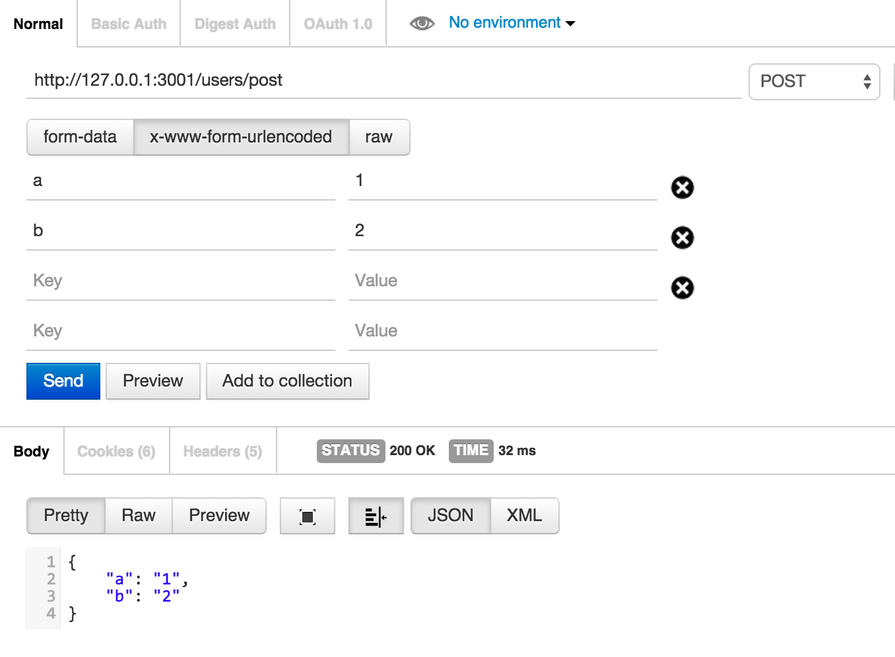
Post with form-data
主要目的是为了上传
npm install --save multer
Usage
var express = require('express')
var multer = require('multer')
var app = express()
app.use(multer({ dest: './uploads/'}))
You can access the fields and files in the request object:
console.log(req.body)
console.log(req.files)
重要提示： Multer will not process any form which is not multipart/form-data
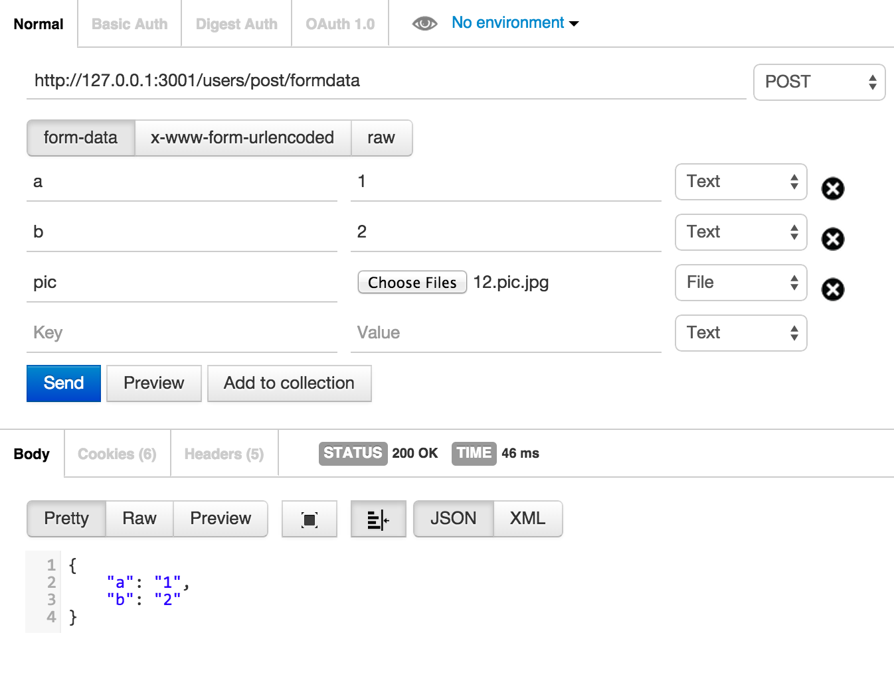
Post with raw
To get the raw body content of a request with Content-Type: "text/plain" into req.rawBody you can do:
https://gist.github.com/tj/3750227
req.rawBody已经被干掉了，现在只能用req.text
下面是tj给出的代码片段
var express = require('./')
var app = express();
app.use(function(req, res, next){
if (req.is('text/*')) {
req.text = '';
req.setEncoding('utf8');
req.on('data', function(chunk){ req.text += chunk });
req.on('end', next);
} else {
next();
}
});
app.post('/', function(req, res){
res.send('got "' + req.text + '"');
});
app.listen(3000)
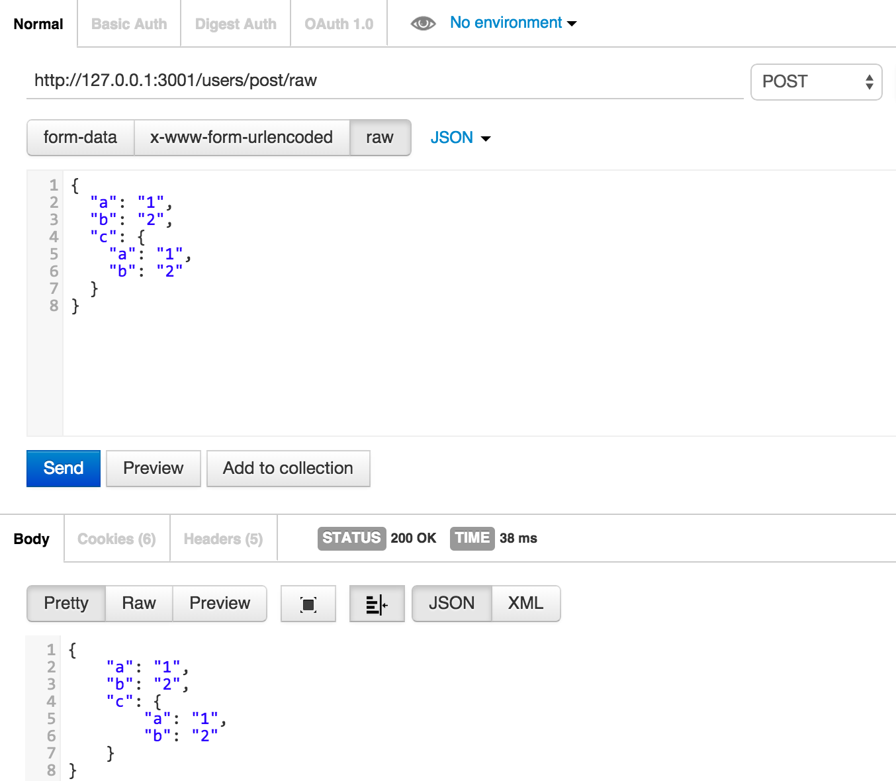
测试
单元测试：http接口
var request = require('supertest');
var express = require('express');
var app = express();
app.get('/user', function(req, res) {
res.status(200).json({ name: 'tobi' });
});
request(app)
.get('/user')
.expect('Content-Type', /json/)
.expect('Content-Length', '15')
.expect(200)
.end(function(err, res) {
if (err) throw err;
});
集成测试：有ui界面的
https://github.com/assaf/zombie
const Browser = require('zombie');
// We're going to make requests to http://example.com/signup
// Which will be routed to our test server localhost:3000
Browser.localhost('example.com', 3000);
describe('User visits signup page', function() {
const browser = new Browser();
before(function(done) {
browser.visit('/signup', done);
});
describe('submits form', function() {
before(function(done) {
browser
.fill('email', 'zombie@underworld.dead')
.fill('password', 'eat-the-living')
.pressButton('Sign Me Up!', done);
});
it('should be successful', function() {
browser.assert.success();
});
it('should see welcome page', function() {
browser.assert.text('title', 'Welcome To Brains Depot');
});
});
});
更多
测试如果要细讲，内容是相当多的，以后再说吧
- 什么是测试？
- 编码境界
- 测试的好处
- 红到绿(重构)工作流
- 单元测试的分类
- 测试框架举例
- ava是什么？
- 用法（含gulp）
- 同步异步
- 三种：普通函数（promise或thunks）、generator、async函数
- 断言
- mock打桩
- 测试内容
- api
- model层
- 集成测试：zombie
- cucumber：
- 自动化 测试流程是什么样的？
- 任何事情超过 90 秒就应该自动化，这是程序员的终极打开方式。Automating shapes smarter future.
- ci
- 使用jenkins自建ci
- travis-ci
- 测试覆盖率
工具postman
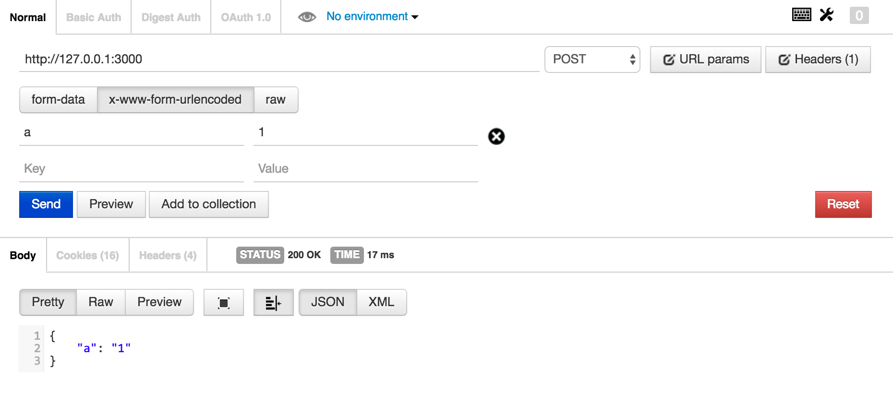
它除了是工具外，最大的好处是有助于你理解http协议
命令行cUrl
#! /bin/bash
echo -n "post common"
curl -d "a=1&b=2" http://127.0.0.1:3001/users/post
echo -n 'post formdata'
curl -F 'pic=@"img/post-common.png"' -F 'a=1' -F 'b=2' http://127.0.0.1:3001/users/post/formdata
echo -n 'post raw json'
curl -d "{"a":"1","b":"2","c":{"a":"1","b":"2"}}" http://127.0.0.1:3001/users/post
如不清楚，请 man curl.
总结：more
- 玩出乐趣，想想本文是怎么玩的？
- 利用好时间：闲时要有吃紧的心思，忙里要有偷闲的乐趣
- 少抱怨，多思考，未来更美好
- 每日精进，自有成为大牛之日